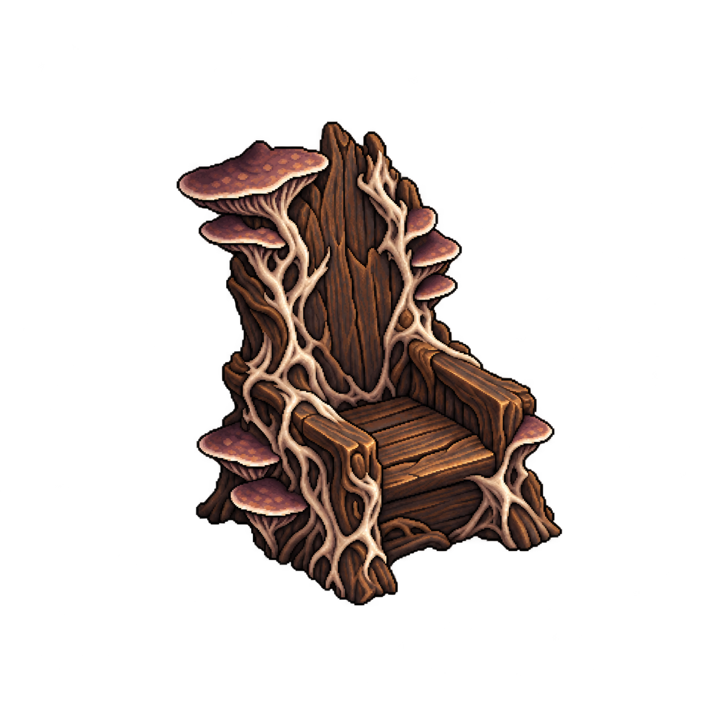
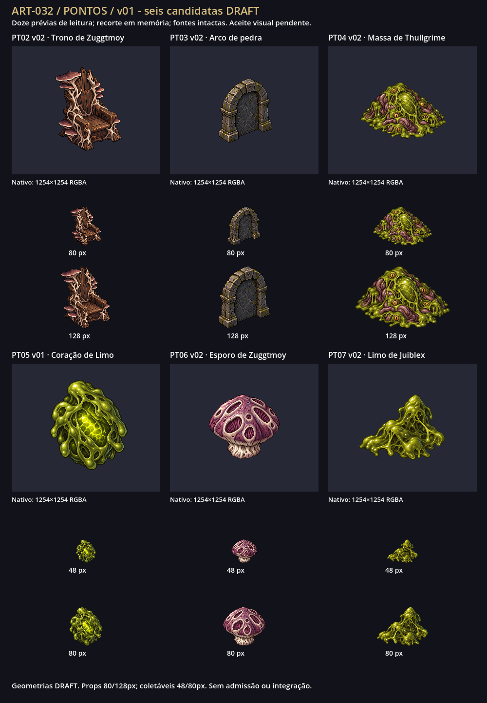
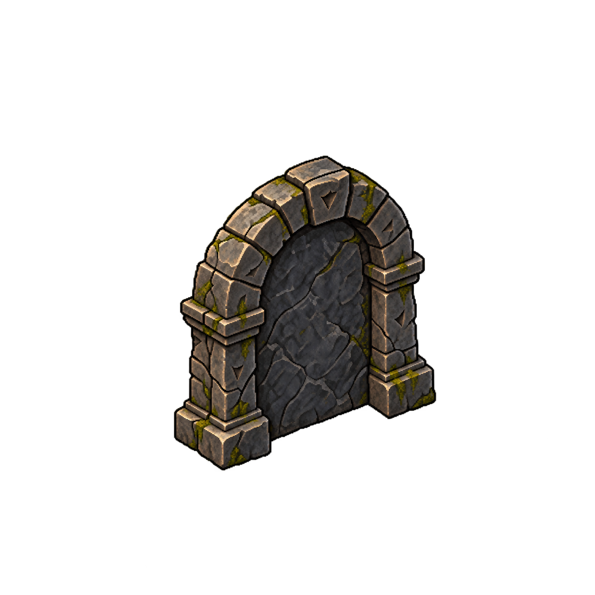
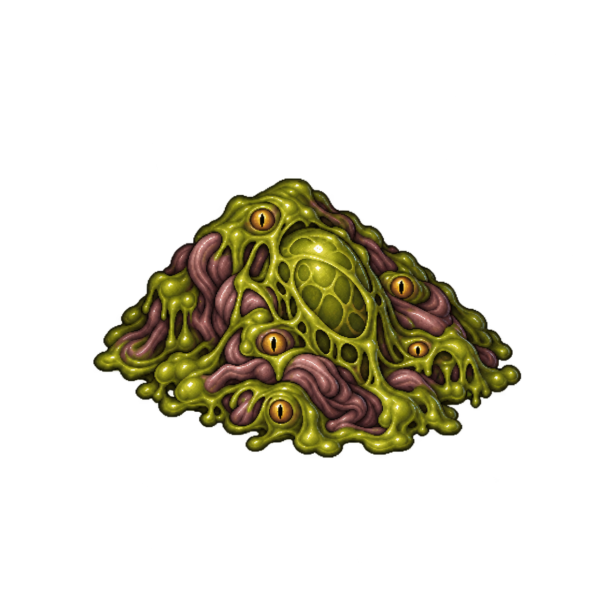
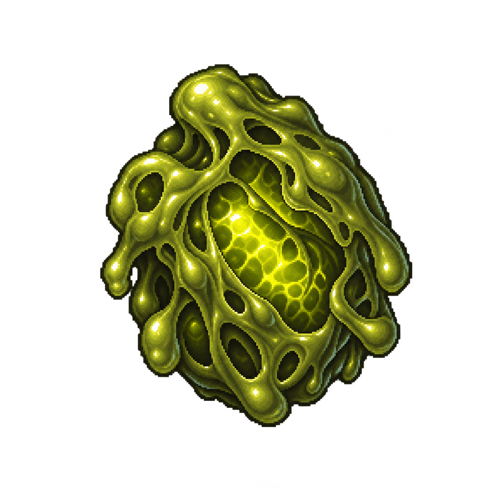
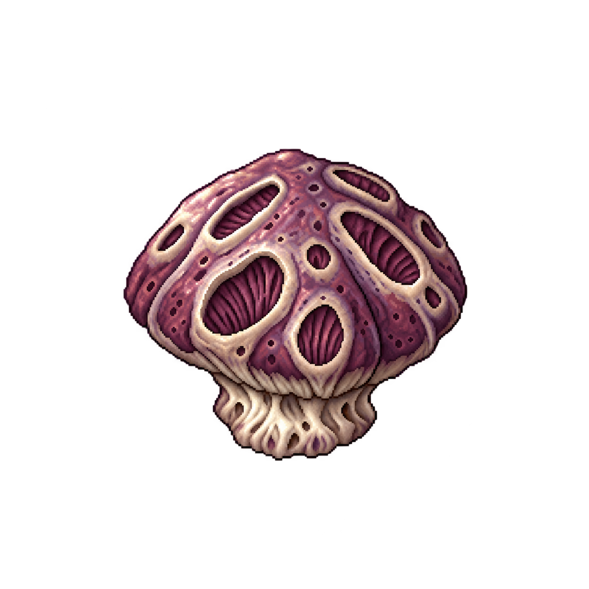
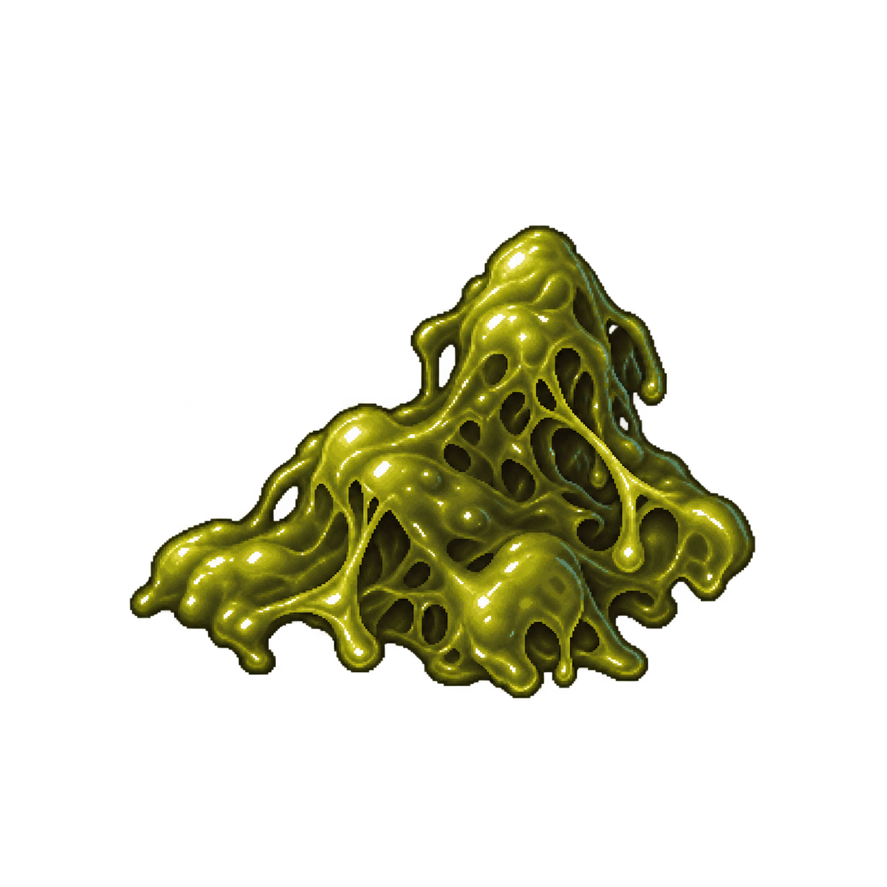

PT02 v02 · Trono de Zuggtmoy · DRAFT


Trono vazio e fúngico; geometria DRAFT.
80 px de altura visível
128 px de altura visível
1254×1254 RGBA · margem 14.19% · alfa na borda 1/255
O dono respondeu “atena, aprovado” em 2026-10-12. Recibo das seis revisões/hashes. Geometrias continuam DRAFT. A prancha abaixo preserva o estado histórico de entrega antes do aceite.
PT02 trono v02, PT03 arco v02, PT04 massa v02, PT05 Coração de Limo v01, PT06 esporo v02 e PT07 limo v02. Onze fontes nativas preservadas; candidatas cumprem margem mínima de 10%. PT02/PT05 têm resíduo nativo de alfa 1/255 na borda; demais candidatas têm borda vazia. Geometrias não documentadas continuam hipóteses DRAFT.
Prancha Godot com doze prévias de leitura: props 80/128px; coletáveis 48/80px. Recorte em memória pela caixa alfa >8, sem mudar pixels nativos nem definir escala runtime. Fontes reais 1254×1254 (pedido 1024×1024). HTML conferido por links/metadados; renderização no navegador não realizada devido ao bloqueio conhecido de file://.

Origem/hashes · Auditoria · Prompts completos
Carregando doze prévias…

Trono vazio e fúngico; geometria DRAFT.
1254×1254 RGBA · margem 14.19% · alfa na borda 1/255

Arco inativo com face central opaca; solução geométrica DRAFT. Marcas abstratas não são texto rúnico canônico.
1254×1254 RGBA · margem 20.89% · alfa na borda 0/255

Massa dormente com casulo/olhos; sem ritual, cultistas ou arte nova do chefe.
1254×1254 RGBA · margem 13.96% · alfa na borda 0/255

Núcleo verde compacto do evento; forma DRAFT, sem coração anatômico.
1254×1254 RGBA · margem 12.60% · alfa na borda 1/255

Unidade fúngica malva experimental; anatomia não fixada na lore.
1254×1254 RGBA · margem 20.57% · alfa na borda 0/255

Porção de gosma sem olhos/núcleo; diferenciar do PT05 a 48 px.
1254×1254 RGBA · margem 14.59% · alfa na borda 0/255
PT02 v01 preservada · PT03 v01 preservada · PT04 v01 preservada · PT06 v01 preservada · PT07 v01 preservada
Revisar leitura/contraste, trono vazio fúngico, arco inativo e massa dormente; comparar núcleo, esporo e limo a 48px. Aceite por código/revisão registrado em S-005. Contraste em mapa, pivôs e tamanhos finais dependem de trabalho futuro.